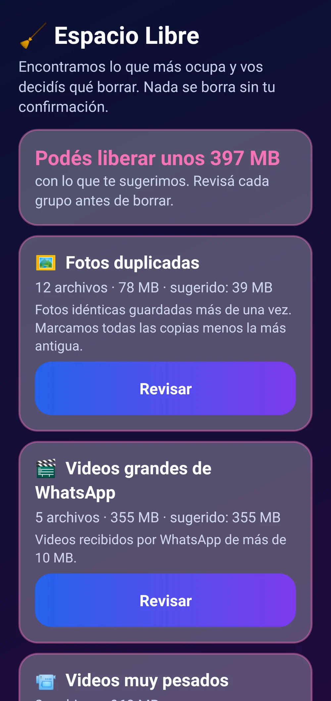
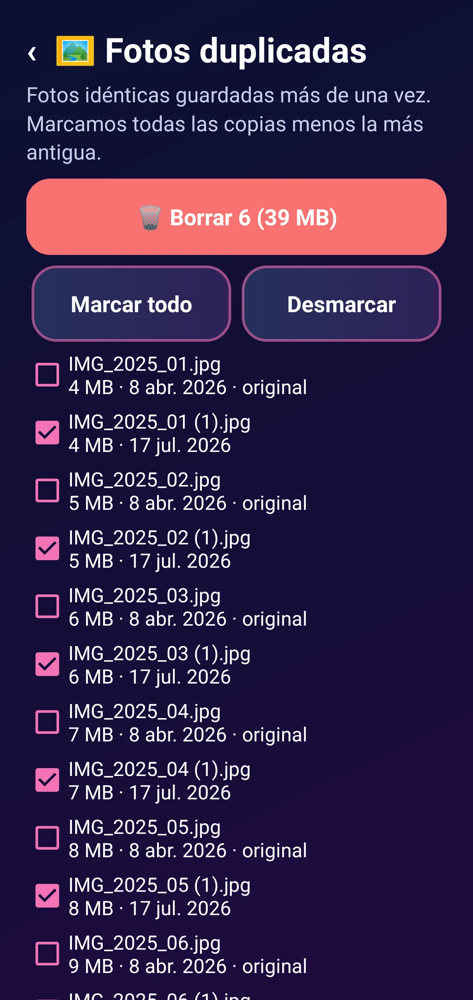
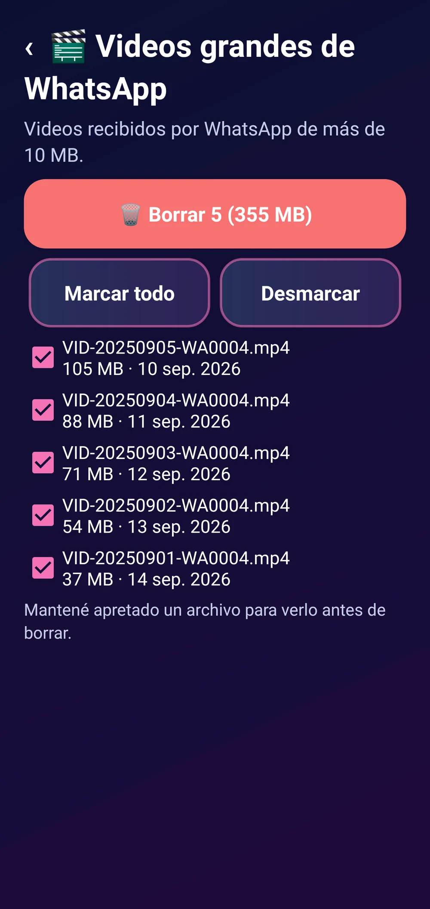
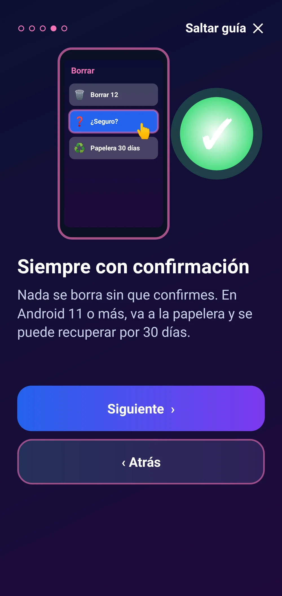
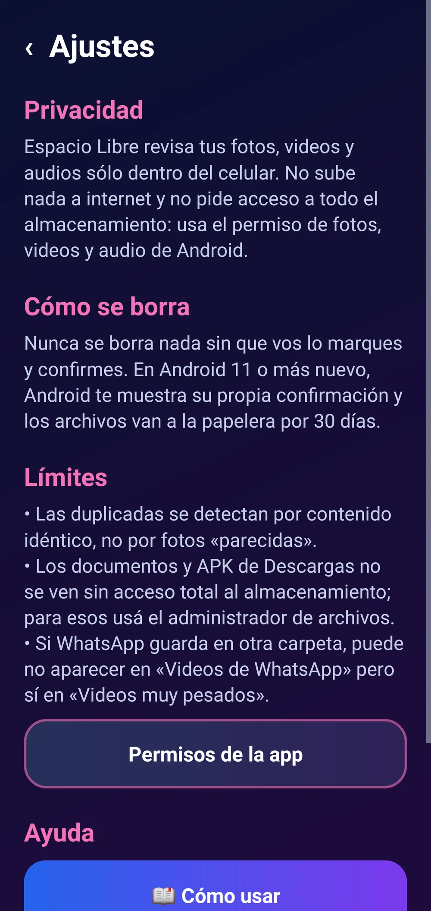

Espacio Libre
Encuentra fotos duplicadas, videos pesados de WhatsApp, audios viejos y descargas olvidadas, y los borra sólo cuando vos confirmás.
Liberá espacio sin miedo: vos ves y elegís todo antes de borrar.
Las duplicadas se detectan por contenido idéntico, no por fotos «parecidas». Los documentos y APK de Descargas no se pueden revisar sin acceso total al almacenamiento, que la app no pide: para esos usá el administrador de archivos. En Android 9 y 10 lo borrado no va a una papelera.
Para celulares Android 9 o más nuevos.
Sin publicidad. Nunca.Pagás una vez y la app es tuya: sin banners, sin videos que te hacen esperar, sin interrupciones. Por qué cobramos
 ¿Celular lleno? Liberá espacio en minutos
¿Celular lleno? Liberá espacio en minutos

Cuánto podés liberar

Fotos repetidas: la original queda

Videos pesados de WhatsApp

Siempre con confirmación

Privacidad y límitesLo que la hace distinta
- 🖼️ Fotos repetidas por contenido idéntico, no por parecido.
- 🎬 Los videos pesados de WhatsApp, juntos y ordenados.
- 🛑 Nada se borra sin tu confirmación.
- ♻️ Papelera de 30 días en Android 11 o más.
- 🔒 Sin acceso total al almacenamiento y sin subir nada a internet.
Qué es
Espacio Libre revisa tus fotos, videos y audios y te muestra lo que sobra: fotos idénticas guardadas más de una vez, videos grandes de WhatsApp, videos muy pesados, audios y notas de voz viejas y descargas olvidadas. Vos revisás cada grupo, cambiás lo que quieras y confirmás: nada se borra solo. En Android 11 o más, los archivos van a la papelera y se pueden recuperar por 30 días. No pide acceso a todo el almacenamiento: usa el permiso de fotos, videos y audio de Android.
Qué hace
- Revisa fotos, videos y audios con el sistema oficial de Android (MediaStore).
- Detecta fotos idénticas guardadas más de una vez comparando su contenido y deja marcada la más antigua como original.
- Agrupa videos de WhatsApp de más de 10 MB, videos de más de 100 MB, audios de hace más de 3 meses y descargas de hace más de 2 meses.
- Te sugiere qué borrar; vos marcás, desmarcás y confirmás. Mantené apretado un archivo para verlo.
- En Android 11 o más, Android pide su propia confirmación y manda los archivos a la papelera por 30 días.
Requisitos
- Celular Android 9 o más nuevo
- Permiso de fotos, videos y audio
- No pide acceso total al almacenamiento
Funciones
- Fotos duplicadas por contenido idéntico (conserva la original)
- Videos grandes de WhatsApp
- Videos muy pesados
- Audios y notas de voz viejos
- Descargas olvidadas (fotos, videos y audios)
- Papelera de 30 días en Android 11+
- Sin acceso total al almacenamiento
Cómo se instala
- Descargá el APK e instalalo (si Android pregunta, permití instalar desde el navegador).
- Abrí la app y dale el permiso de fotos, videos y audio.
- Revisá cada grupo y confirmá lo que quieras borrar.
- Para comprar: «Activar» → «Comprar con Mercado Pago».
Novedades
- 1.0.2 — Pulido visual: nuevo diseño SumoSoft con intro animada, selector de colores y tema (claro/oscuro/automático) que se ve bien en pantallas angostas, mejor legibilidad. Al activar la licencia desaparece todo rastro de la prueba.
- 1.0.0 — Primera versión.